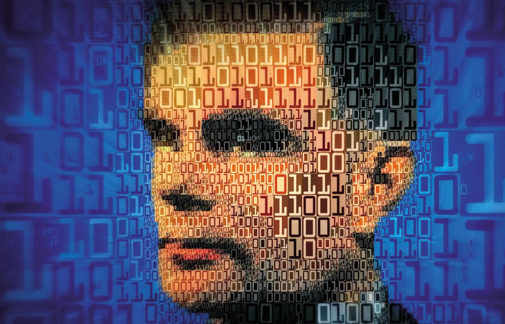

Alan Turing foi um matemático, lógico, criptoanalista e cientista da computação britânico, amplamente considerado
um dos pais da
ciência da computação e da inteligência artificial. Nascido em 1912, Turing demonstrou desde
cedo um talento excepcional para a matemática e a lógica.
A contribuição de Turing abrange diversas áreas. Na matemática, seu trabalho sobre números computáveis
e a indecidibilidade de certos problemas influenciou profundamente
a lógica e a teoria da computação.
Durante a guerra, sua expertise em criptoanálise foi fundamental para a inteligência aliada.
Após a guerra, ele explorou a possibilidade
de inteligência em máquinas, propondo o famoso Teste de Turing em 1950, um experimento
para determinar se uma máquina pode exibir um comportamento inteligente indistinguível
do de um humano, estabelecendo um marco para o campo da inteligência artificial.
Embora não se trate de uma invenção física no sentido tradicional, a maior invenção de Alan Turing é amplamente considerada a Máquina de Turing.
Este conceito teórico, descrito
em seu artigo de 1936 "On Computable Numbers", formalizou a ideia de um dispositivo computacional capaz de executar qualquer cálculo algorítmico.
A Máquina de Turing é um modelo
abstrato que define os limites do que pode ser computado e serviu como a base teórica para o desenvolvimento dos computadores eletrônicos modernos.
Sua influência é fundamental para toda a tecnologia da informação que usamos hoje.